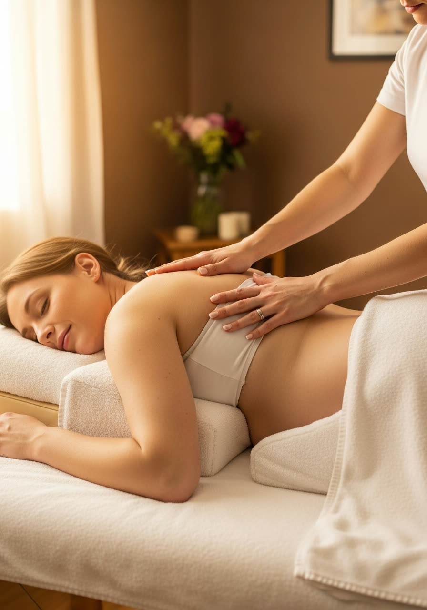

Therapies for Every Body
Thirteen healing therapies, one pair of expert hands. Every session begins with a personal consultation so the treatment is shaped around you.
The Classics, Done Properly

Traditional Thai Massage
The ancient art of Wat Po, performed fully clothed on a comfortable mat. Rhythmic acupressure along the body's energy lines is combined with assisted, yoga-like stretches. It improves flexibility, releases blocked tension, boosts circulation and leaves you feeling energised rather than sleepy.

Thai Oil Massage
Long, flowing strokes with warm aromatic oils, worked over the whole body on the massage table. The warmth of the oil softens muscles, calms the nervous system and nourishes the skin — the perfect remedy for stress, poor sleep and general fatigue.

Full Body Massage
A complete head-to-toe treatment combining Thai pressure-point work with smooth oil techniques. Every major muscle group is attended to — back, legs, arms, hands, feet, neck and scalp — so nothing is left carrying yesterday's tension.

Relaxing Massage
A gentle, soothing massage with light-to-medium pressure and slow, calming strokes. Designed purely for rest and stress relief, it lowers tension, quietens a busy mind and is ideal if it's your very first massage.

Aromatherapy Massage
A relaxing oil massage enhanced with essential-oil blends chosen for your needs — lavender to calm, eucalyptus to clear, citrus to lift. The combination of scent and touch works on body and mood together.
Where Pain Meets Its Match

Deep Tissue Massage
Slow, deliberate strokes and sustained pressure that reach the deeper layers of muscle and connective tissue. Highly effective for chronic knots, frozen shoulders, lower-back pain and old injuries. Expect firm work — and lasting relief.

Back, Spine & Joint Relief
A focused therapeutic session for spinal discomfort, sciatica, stiff hips and aching joints. Combining acupressure, careful stretching and warming balms, it's the treatment our clients with long-term back trouble return for, month after month.

Head, Neck & Shoulder Massage
Concentrated work on the areas modern life punishes most. Releases tight trapezius muscles, eases tension headaches and undoes the damage of long hours at desks and steering wheels. A powerful reset in a shorter session.
Foot Massage & Reflexology
Thai-style foot massage working the reflex points that mirror the whole body. Relieves tired, heavy legs, improves circulation and is surprisingly restorative for overall energy. Finished with a warm herbal balm.

Sports Massage
Firm, targeted treatment for active bodies — runners, GAA players, swimmers and gym-goers. Flushes out tight calves and hamstrings, speeds recovery between sessions and helps prevent injury before it happens.
Gentle Care for Life's Seasons

Pregnancy Massage
Specialised prenatal massage using safe side-lying positions and supportive cushions. Gentle techniques ease lower-back ache, swollen legs, hip pressure and pregnancy fatigue — trusted by expectant mothers across Mayo through every trimester after the first.

Women's Wellness Therapy
A restorative therapy created for the times a woman's body needs extra kindness — postnatal recovery, hormonal changes, menopause or simple exhaustion. Warm oils, gentle abdominal and lower-back work, and unhurried care in complete privacy.
Ayurvedic Massage
Inspired by the Indian tradition of Abhyanga, this treatment uses generous warm herbal oils and long, rhythmic strokes toward the heart. It calms the nervous system, supports lymphatic flow and deeply nourishes dry skin — a true whole-body restoration.
Tell Us How You Feel — We'll Do the Rest
Every session starts with a consultation. Describe your aches and your goals, and Chiraphat will recommend the right therapy for you.
Send an Enquiry →